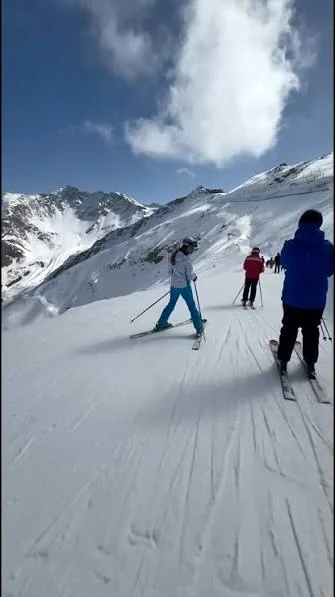
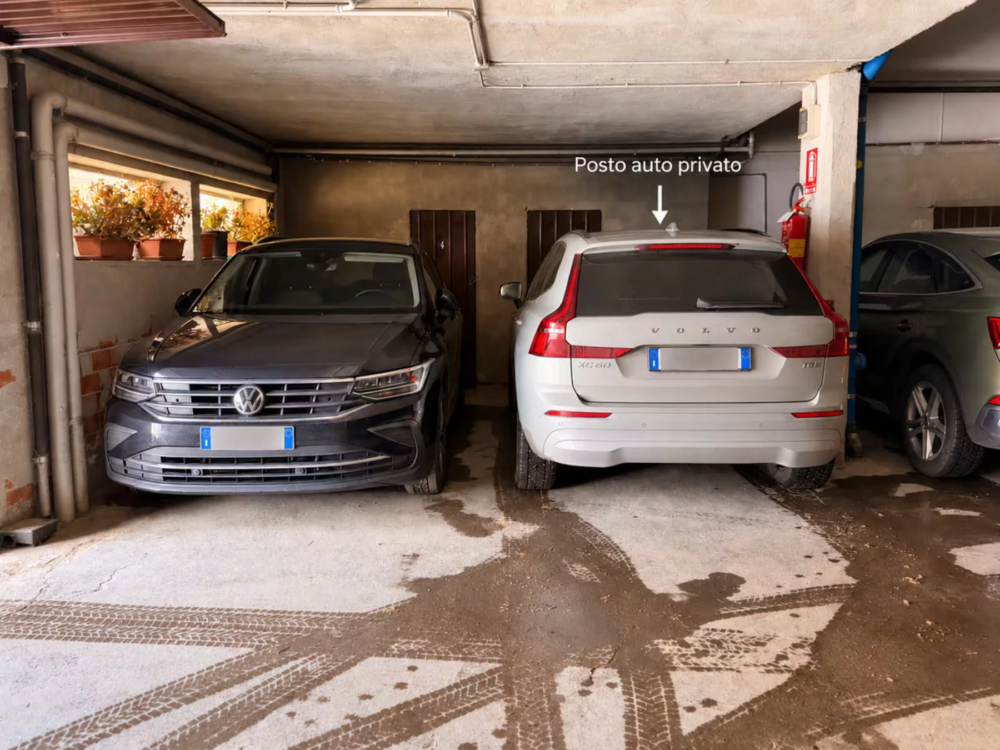

Soft Wow Cabin
Het huis
Een slaapkamer met tweepersoonsbed, een comfortabele tweepersoonsslaapbank, een volledig uitgeruste keuken en een zonnig balkon op het zuiden.


De bergen
Ontdek de Vialattea, wintersport en het dorp Sauze d’Oulx, op ongeveer 15 minuten lopen.
Een week op de ski’s ↗Details die het verschil maken
Overdekte privéparkeerplaats, inbegrepen EV-laden na activering, ski- en fietsenberging, schoendroger en zelf inchecken.


Het koffieritueel
Begin de dag met verse koffie uit de Sage espressomachine of gebruik de Nespresso.